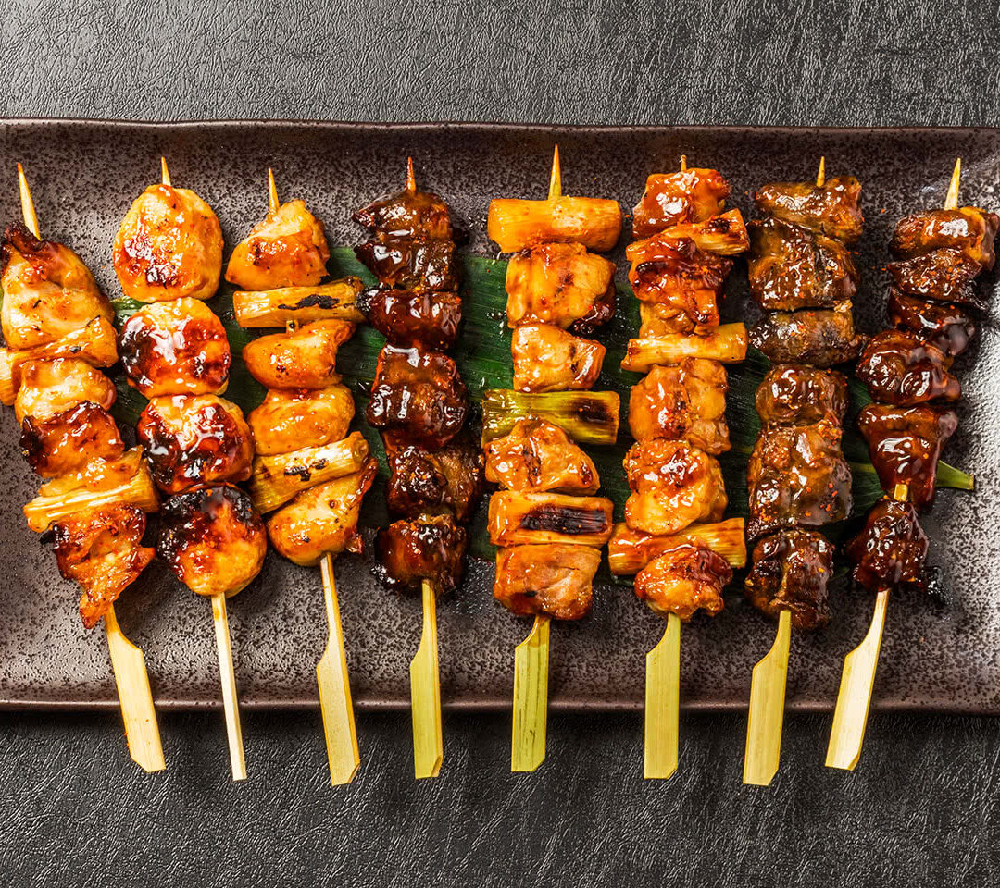
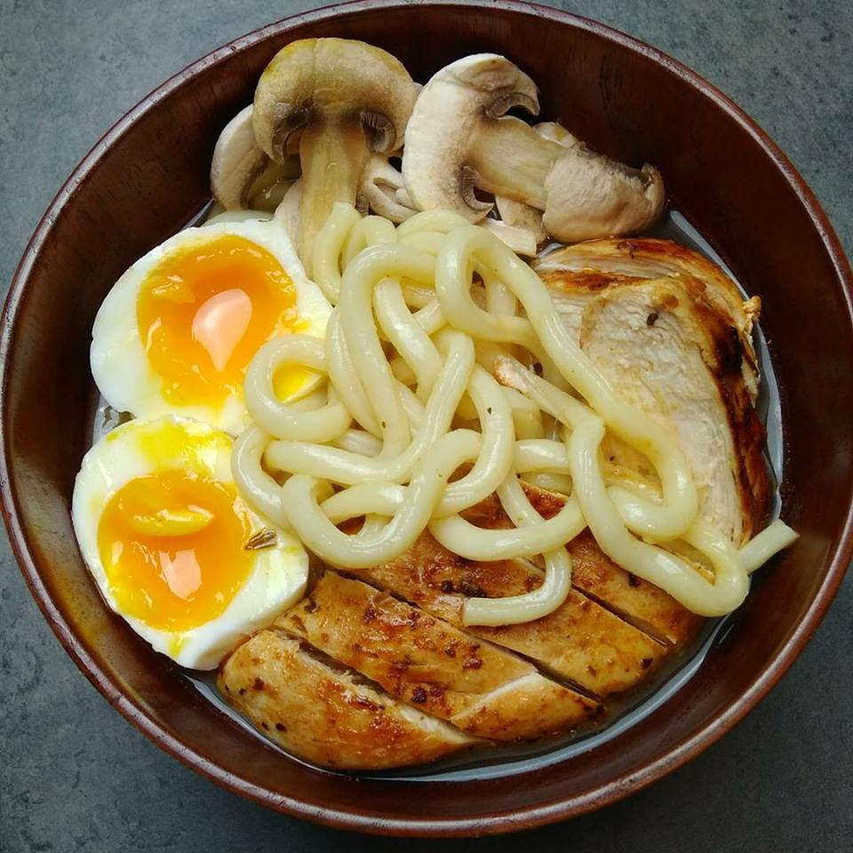
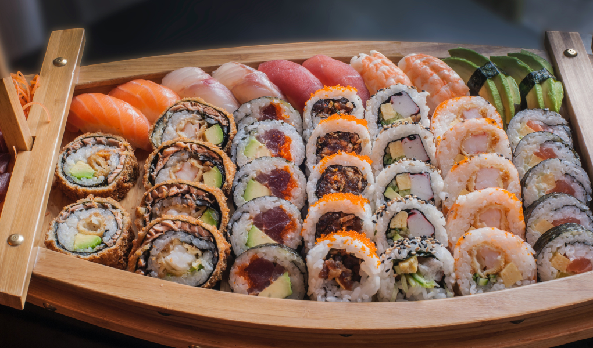
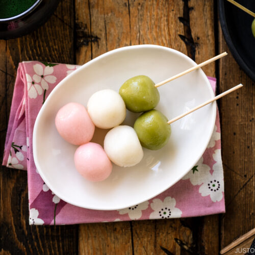

Menu Johnny Silverhand
Des bons Yakitoris fait soit à base de Boeuf, de Porc, de Poulet ou de Thon. Menu adaptés aux vegans possible, veuillez nous contacter.

Menu Jackie Welles
De déliceux Udons faites à base de Nouilles, d'Oeufs, de Champignons et de Porc.Menu adaptés aux vegans possible, veuillez nous contacter.

Menu Dexter Deshawn
Les meilleurs sushis du coin, disponibles au Thon(épicé ou non), Saumon, Tempura Poulet, Avocat, Courgettes. Menu adaptés aux vegans possible, veuillez nous contacter.

Menu Adam Smasher
Les bols de ramens les plus savoureux de Night City, à base de Nouilles, d'Oeufs, de Champignons et de Porc ou Poulet ou Boeuf.Menu adaptés aux vegans possible, veuillez nous contacter.

Une petite faim ?
Nous proposons des Dangos, des Mochis et toute sortes de desserts japonais, de boissons avec ou sans alcool. Aucune des proposition ici n'est adaptés aux vegans car il y a aucun produits venant d'animaux.
